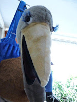

"Alumni" reporting...
5/16/2010
From Bastiaan Verhorst
This week I finished the Maher Ventriloquist Course. I studied it two times all over, and it won't be the last tim
I've been reading in the Course what effect a vent-caracter can have. That the public is fascinated by the figure. And that you're never working alone on stage. While reading, I thought: "it's of course primarily to recommand ventriloquism..."
But, no. It's all true. I was amazed! I'm an entertainer now for 25 years. I've done a lot, but this experience is new for me. And I look forward to the next show, 24 May.
This week I finished the Maher Ventriloquist Course. I studied it two times all over, and it won't be the last tim

e. Yesterday I did my first presentation with my ostrich, Simone. What an experience!I've been reading in the Course what effect a vent-caracter can have. That the public is fascinated by the figure. And that you're never working alone on stage. While reading, I thought: "it's of course primarily to recommand ventriloquism..."
But, no. It's all true. I was amazed! I'm an entertainer now for 25 years. I've done a lot, but this experience is new for me. And I look forward to the next show, 24 May.